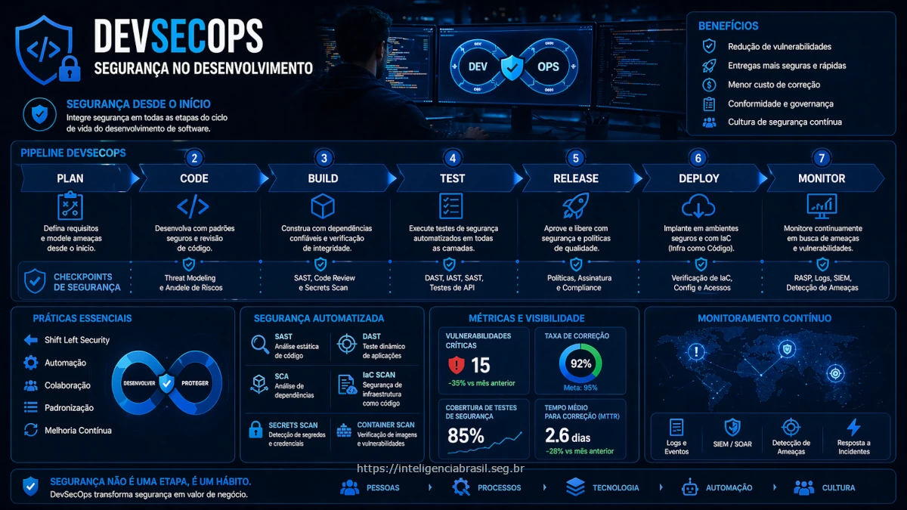

Neste artigo
O que e DevSecOps
DevSecOps e a pratica de integrar seguranca em todas as fases do ciclo de desenvolvimento de software (SDLC), em vez de trata-la como uma etapa final. A seguranca se torna responsabilidade compartilhada entre desenvolvimento, operacoes e security - nao apenas do time de seguranca.
No modelo tradicional, seguranca era testada apenas antes do deploy - criando gargalos e retrabalho. DevSecOps automatiza verificacoes de seguranca no pipeline CI/CD, fornecendo feedback rapido aos desenvolvedores.
Shift-Left Security
Shift-left significa mover atividades de seguranca para o inicio do ciclo de desenvolvimento - quanto mais cedo encontrar problemas, mais barato e facil corrigir.
Atividades por fase
- Planejamento: Threat modeling, requisitos de seguranca
- Codificacao: IDE plugins, pre-commit hooks, secure coding guidelines
- Build: SAST, SCA, secrets scanning
- Teste: DAST, IAST, pentest
- Deploy: IaC scanning, container scanning
- Operacao: RASP, WAF, monitoramento continuo
Ferramentas por Tipo de Teste
| Tipo | O que faz | Quando usar | Exemplos |
|---|---|---|---|
| SAST | Analisa codigo-fonte sem executar | Durante build/PR | SonarQube, Checkmarx, Semgrep, CodeQL |
| DAST | Testa aplicacao em execucao | Ambiente de staging | OWASP ZAP, Burp Suite, Nuclei |
| SCA | Analisa dependencias/bibliotecas | Durante build | Snyk, Dependabot, OWASP Dependency-Check |
| IAST | Agente em runtime + analise | Testes funcionais | Contrast Security, Hdiv |
| Secrets | Detecta credenciais em codigo | Pre-commit, CI | GitLeaks, TruffleHog, detect-secrets |
| IaC | Analisa Terraform, CloudFormation | Durante PR/build | Checkov, tfsec, Terrascan |
| Container | Vulnerabilidades em imagens | Build, registry | Trivy, Grype, Snyk Container |
Pipeline Seguro CI/CD
Um pipeline DevSecOps tipico integra multiplas verificacoes automatizadas:
Pre-commit Hooks
- Secrets scanning (GitLeaks)
- Linting basico de seguranca
- Validacao de formato/sintaxe
Objetivo: Bloquear problemas obvios antes de entrar no repositorio.
Analise Estatica
- SAST (SonarQube, Semgrep)
- SCA - dependencias (Snyk, Dependabot)
- Secrets scanning (TruffleHog)
- IaC scanning (Checkov)
Objetivo: Identificar vulnerabilidades no codigo e dependencias.
Analise Dinamica
- DAST (OWASP ZAP automatizado)
- Container scanning (Trivy)
- Testes de seguranca automatizados
Objetivo: Testar aplicacao em execucao.
Gate de Seguranca
- Verificar se todas as checagens passaram
- Validar politicas de deploy
- Aprovacao para ambientes criticos
Objetivo: Garantir que apenas codigo seguro va para producao.
Secrets Management
Credenciais em codigo sao uma das principais causas de breaches. Estrategias:
- Nunca commitar secrets: Use .gitignore, pre-commit hooks
- Secrets managers: HashiCorp Vault, AWS Secrets Manager, Azure Key Vault
- Environment variables: Injetadas em runtime, nao em codigo
- Rotacao automatica: Secrets devem ter vida curta
- Deteccao: Scan continuo de repositorios por secrets expostos
Metricas de DevSecOps
- MTTR (Mean Time to Remediate): Tempo medio para corrigir vulnerabilidades
- Vulnerabilidades por release: Tendencia ao longo do tempo
- Cobertura de scanning: % de repos/apps com SAST/SCA
- Taxa de falsos positivos: Qualidade das ferramentas
- Escape rate: Vulnerabilidades que chegam a producao
- Lead time para seguranca: Impacto no tempo de deploy
Precisa Implementar DevSecOps?
Ajudamos a integrar seguranca no seu pipeline CI/CD e treinar desenvolvedores.
Falar com EspecialistaPerguntas Frequentes
Comece com quick wins: SCA para dependencias (Snyk/Dependabot e facil de integrar), secrets scanning em pre-commit (GitLeaks), e SAST basico (Semgrep). Depois expanda para DAST e container scanning. Nao tente tudo de uma vez - adocao gradual e mais sustentavel.
Falsos positivos desmotivam desenvolvedores. Estrategias: tune as ferramentas para seu contexto, comece com regras de alta confianca, implemente processo de triagem, permita supress individual com justificativa, e meca/reduza taxa de FP ao longo do tempo. Qualidade > quantidade de findings.
Nao. DevSecOps automatiza verificacoes conhecidas - pentest encontra vulnerabilidades de logica, falhas de design e problemas que ferramentas automatizadas nao detectam. Idealmente, DevSecOps reduz a quantidade de issues que chegam ao pentest, permitindo que pentesters foquem em problemas mais complexos.